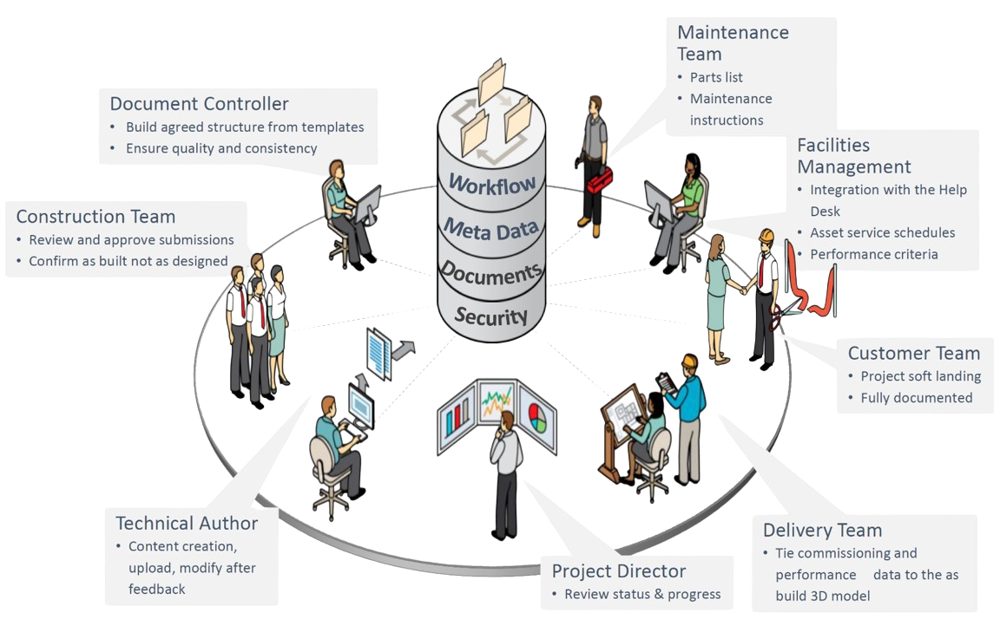

<!doctype html>
<html lang="en" prefix="og: http://ogp.me/ns#">
  <head>
    <meta charset="utf-8">
    <meta name="viewport" content="width=device-width, initial-scale=1">

    <!-- CLEAN MARKUP = GOOD KARMA.
      Hi source code lover,

      you're a curious person and a fast learner ;)
      Let's make something beautiful together. Contribute on Github:
      https://github.com/webslides/webslides

      Thanks!
      -->

    <!-- SEO -->
    <title>Product Lifecycle Cooperation</title>
    <meta name="description" content="A standard to support cooperation in the whole product lifecycle.">

    <!-- URL CANONICAL -->
    <!-- <link rel="canonical" href="http://your-url.com/permalink"> -->

    <!-- Google Fonts -->
    <link href="https://fonts.googleapis.com/css?family=Roboto:100,100i,300,300i,400,400i,700,700i%7CMaitree:200,300,400,600,700&amp;subset=latin-ext" rel="stylesheet">

    <!-- CSS Base -->
    <link rel="stylesheet" type='text/css' media='all' href="./static/css/webslides.css">
    <link rel="stylesheet" type='text/css' media='all' href="./static/css/my-slides.css">

    <!-- Optional - CSS SVG Icons (Font Awesome) -->
    <link rel="stylesheet" type="text/css" media="all" href="./static/css/svg-icons.css">

    <!-- FAVICONS -->
    <link rel="shortcut icon" sizes="16x16" href="./static/images/favicons/favicon.png">
    <link rel="shortcut icon" sizes="32x32" href="./static/images/favicons/favicon-32.png">
    <link rel="apple-touch-icon icon" sizes="76x76" href="./static/images/favicons/favicon-76.png">
    <link rel="apple-touch-icon icon" sizes="120x120" href="./static/images/favicons/favicon-120.png">
    <link rel="apple-touch-icon icon" sizes="152x152" href="./static/images/favicons/favicon-152.png">
    <link rel="apple-touch-icon icon" sizes="180x180" href="./static/images/favicons/favicon-180.png">
    <link rel="apple-touch-icon icon" sizes="192x192" href="./static/images/favicons/favicon-192.png">

    <!-- Android -->
    <meta name="mobile-web-app-capable" content="yes">
    <meta name="theme-color" content="#333333">
  </head>
  <body>
    <main role="main">
      <article id="webslides">

        <!-- Quick Guide
          - Each parent <section> in the <article id="webslides"> element is an individual slide.
          - Vertical sliding = <article id="webslides" class="vertical">
          - <div class="wrap"> = container 90% / <div class="wrap size-50"> = 45%;
        -->

        <section>
          <!--.wrap = container (width: 90%) -->
          <div class="wrap aligncenter">
            <h2>Product Lifecycle Cooperation</h2>
        <!--    <p class="text-subtitle" style="margin-top:4rem"> -->
            <p style="margin-top:4rem;font-size:130%;">
				A standard to support cooperation in the whole product lifecycle<br/>
				needs a reference implementation and validation early-on.
			</p>
          </div>
          <!-- .end .wrap -->
        </section>
        <section class="bg-gradient-white">
            <div class="my-section-title">
              <p>The Construction Industry has Building Information Modeling (BIM) <br/>- the Manufacturing Industry has Nothing Comparable yet</p>
<!--
              <p class="text-intro"><strong>Hi, this is WebSlides</strong>. HTML presentations made simple. <br>I'm a cute solution with clean markup and <strong>lovely CSS</strong>.</p>
-->
            </div>
			<div style="padding-top:7.2rem">
				
				<h4>The savings come from:</h4>
					<ul>
						<li>Integration</li>
						<li>Simple visualization for complex information</li>
						<li>Reduced Processing time</li>
						<li>Efficiencies in distribution and management</li>
						<li>Single version of the truth</li>
						<li>Fully electronic processes</li>
						<li>Remove paper and scanning</li>
						<li>Removal of non value add work</li>
						<li>Fast access to information in context</li>
						<li>Automation and tracking of critical information</li>
					</ul>
				<p style="font-size:80%"><i>
				Source: <a href="https://www.slideshare.net/slideshow/200460-delivering-operational-efficiency-in-the-new-dawn-of-complex-bim-data-through-the-use-of-oracles-auto-vue/49251934">Matthews, Jason: Delivering Operational Efficiency in the Construction Industry</a>
				</i></p>
			</div>
        </section>

      </article>
    </main>

	<!-- Repeated on every slide -->
    <footer>
      <nav role="navigation">
        <p class="logo"><a href="https://www.gfse.org/en/" title="GfSE e.V." target="_blank" alt="GfSE.org"></a></p>
        <ul class="alignright">
          <li class="github">
            <a rel="external" href="https://github.com/GfSE" title="GfSE on GitHub" target="_blank">
              <svg class="fa-github"><use xlink:href="#fa-github"></use></svg>
              <em>GfSE e.V.</em>
            </a>
          </li>
        </ul>
      </nav>
    </footer>

    <!-- Required -->
    <script src="./static/js/webslides.js"></script>

    <script>
      window.ws = new WebSlides();
    </script>

    <!-- OPTIONAL - svg-icons.js (fontastic.me - Font Awesome as svg icons) -->
    <script defer src="./static/js/svg-icons.js"></script>

  </body>
</html>
